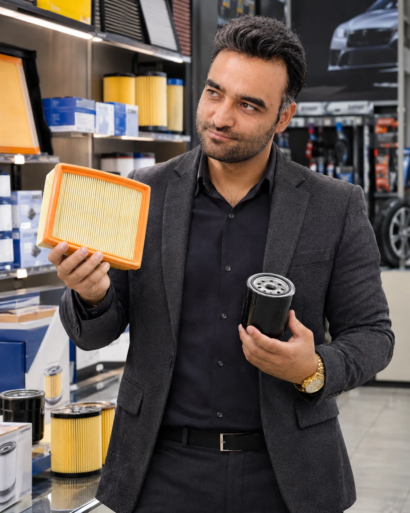
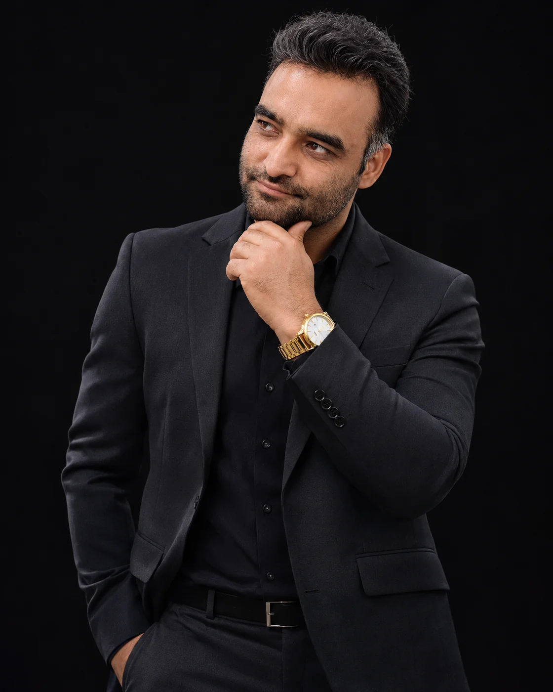
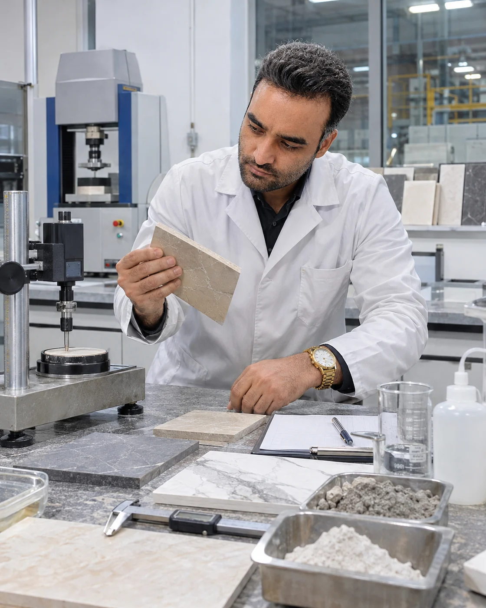
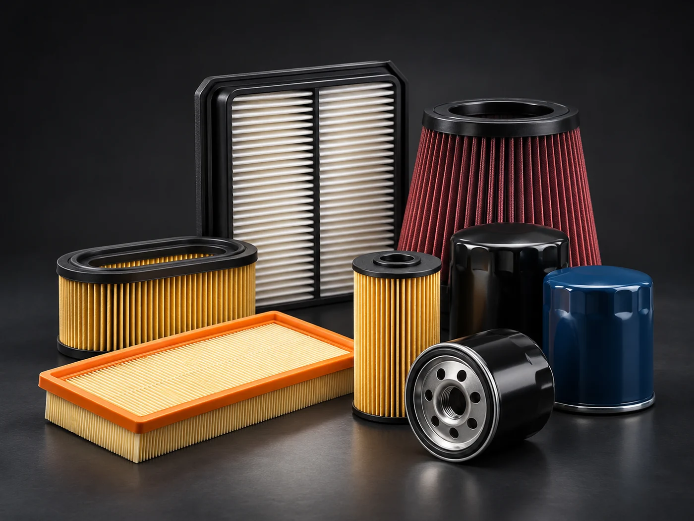
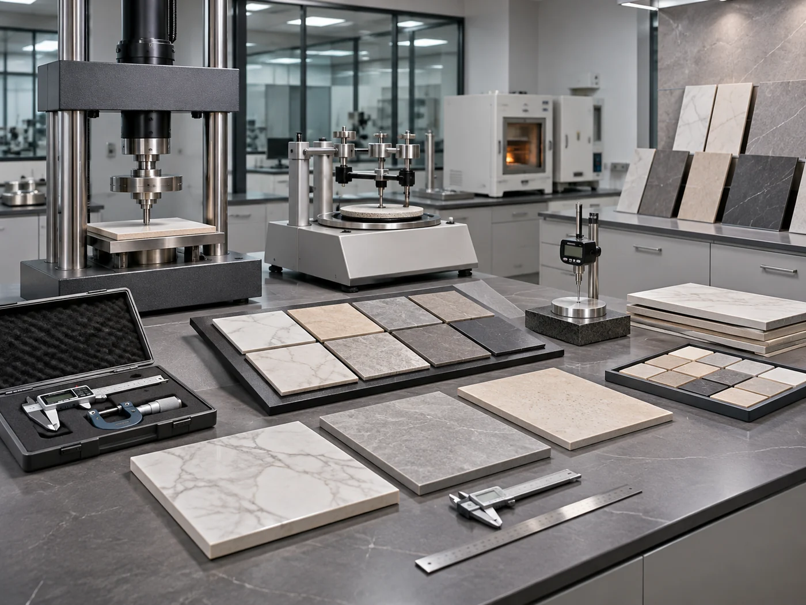
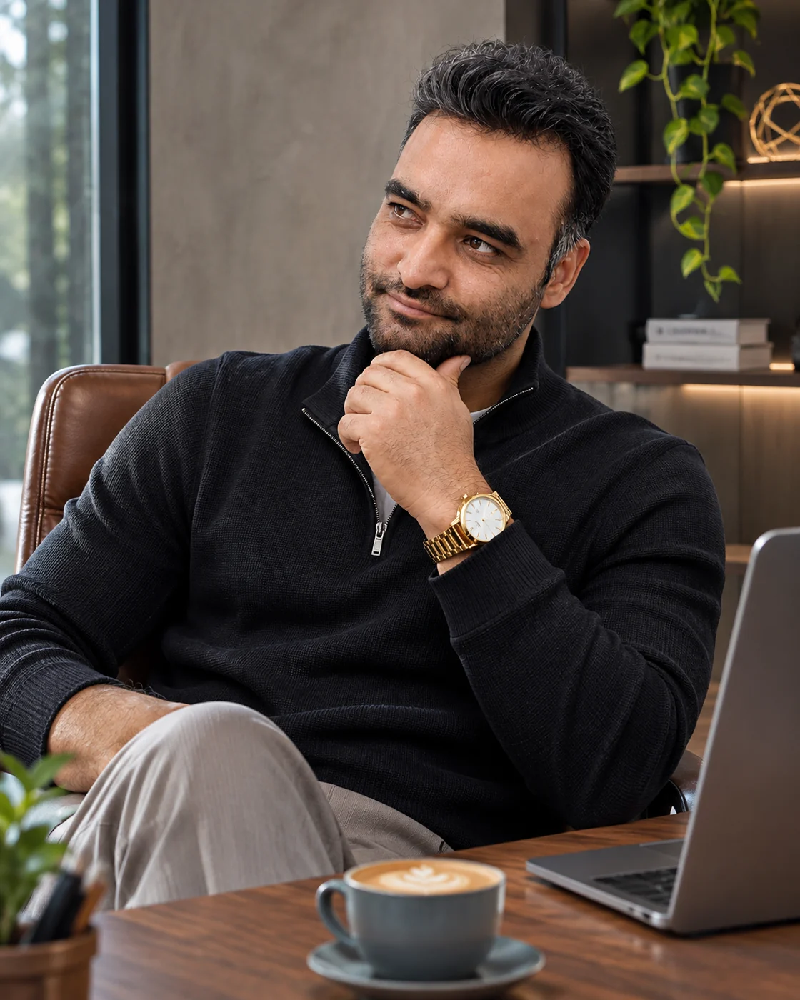

AUTO / FILTERS01 / AUTOMOTIVE FILTERS
AIR / OILفیلترهای خودرو
فروش و معرفی فیلتر هوا و فیلتر روغن خودرو
مسیرهای متفاوت، یک داستان شخصی. دانشآموخته حسابداری، فعال در فروش فیلتر هوا و روغن خودرو و شاغل در آزمایشگاه کارخانه کاشی زهره.

من حمید مکاری هستم. تحصیلاتم در رشته حسابداری بوده، اما تجربه کاریام در مسیرهای متفاوتی شکل گرفته است؛ از فعالیت در آزمایشگاه کارخانه کاشی زهره تا فروش فیلترهای هوا و روغن خودرو. اینجا فضایی برای معرفی خودم، تجربههایم و فعالیتهایی است که انجام میدهم.
از آزمایشگاه صنعت کاشی تا بازار قطعات مصرفی خودرو؛ دو زمینه کاری که بخش مهمی از مسیر حرفهای من هستند.

AUTO / FILTERSفروش و معرفی فیلتر هوا و فیلتر روغن خودرو

CERAMIC / LABORATORYفعالیت در آزمایشگاه کارخانه کاشی زهره
محصولات و فضای کاری، جزئیاتی از دو حوزه فعالیت من را نشان میدهند.


دانشآموخته کارشناسی حسابداری
فعالیت در آزمایشگاه کارخانه کاشی زهره
فروش فیلتر هوا و فیلتر روغن خودرو
تحصیلات دانشگاهی، تجربه کار در آزمایشگاه کاشی و فعالیت در بازار فیلترهای خودرو، سه بخش از پیشینه حرفهای من را تشکیل میدهند.

BEYOND WORK.مسیر کاری من تنها در یک حوزه خلاصه نمیشود. از فضای دقیق و فنی آزمایشگاه تا ارتباط با مشتریان در بازار قطعات خودرو، تجربههای گوناگونی داشتهام. این بخش نگاهی شخصیتر به این مسیر است.
برای گفتگو یا ارتباط درباره فعالیتهایم، از طریق تماس تلفنی یا تلگرام با من در ارتباط باشید.
تصاویر نمایشی سایت با استفاده از هوش مصنوعی و بر اساس عکس مرجع بازآفرینی شدهاند؛ بازتاب عکسبرداری واقعی از محل کار نیستند.